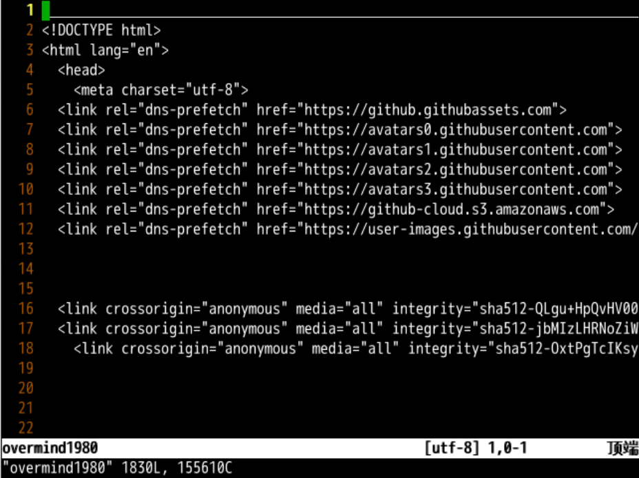
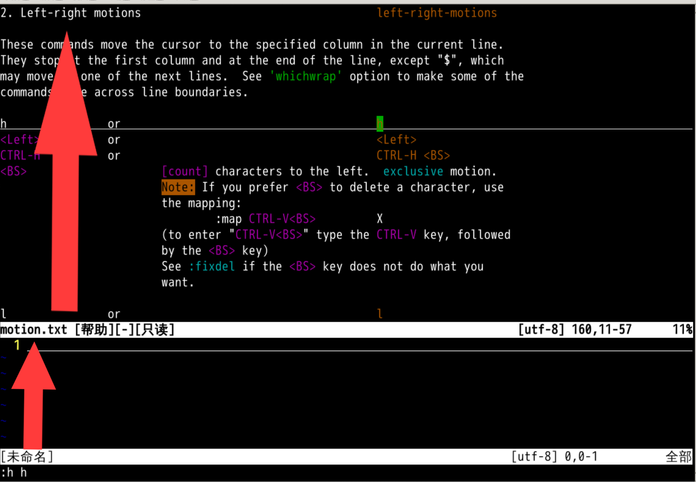
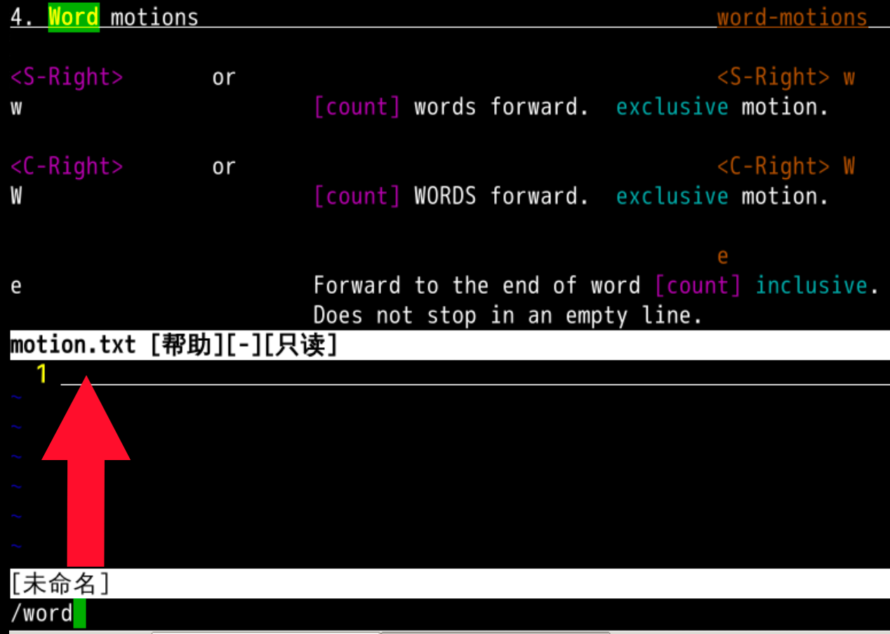
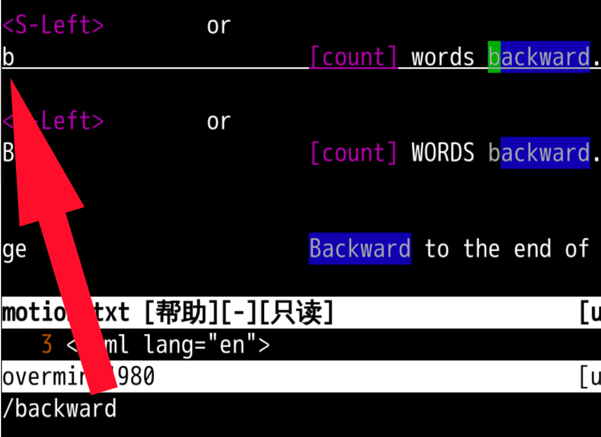

向前向后
回忆上节课内容🤔

- 我们上次强化了起手势🧘
- 回忆了基本的移动方式
hjkl - 除
hjkl外,据说还有更厉害的移动方式 - 是什么呢？
下素材
#这个素材，我们下载过，重温一下
wget gitee.com/overmind1980
#然后看看下载了个啥
ls
#最后用vim打开这个网页
vim overmind1980

使用帮助学习
- 其他的移动命令应该和
hjkl离得不远 - 可以使用
:h h先找到h的帮助📕- 注意是
:h h，而不是:h :h :h h查找的是 正常模式下 h 命令的帮助手册:h :h查找的是 命令行模式下:h命令的帮助手册
- 注意是
- 找到这个文件叫做
motion.txt - 对应的位置叫做
2.Left-right motion

- 点击上图可放大
在帮助中查找单词
- 我希望按照
单词进行移动- 单词的英文是
word - 在
vim打开的motion.txt帮助手册中- 使用
/word - 查找
motion.txt中关于word的单词
- 使用
- 单词的英文是
- 找到这个命令叫做
w - 退出帮助
:q试试w

word

w可以移动到下一个单词的开头w比l效率要高好多- 让我们在环境中爽起来➡️➡️➡️
www...- 但是只有向前，没有回去吗？🤔
搜索 backward🔙
- 可以使用
:h w先找到w的帮助 - 还是
motion.txt - 可以使用
/backward查找向前之类的单词 - 找到我们需要的命令
b

backward

b就是向前一个单词b来到前一个单词的词头- 有来就有去
- 有阴就有阳
- 我们可以使用
w和b反复横跳🤸
总结
- 我们这次学了向前一个单词
- w
- 意思是
word
- 还学习了向后一个单词
- b
- 意思是
backward
- 这俩命令都落在单词的第一个字母
- 还有什么好玩的命令吗？🤔
- 下次再说 👋